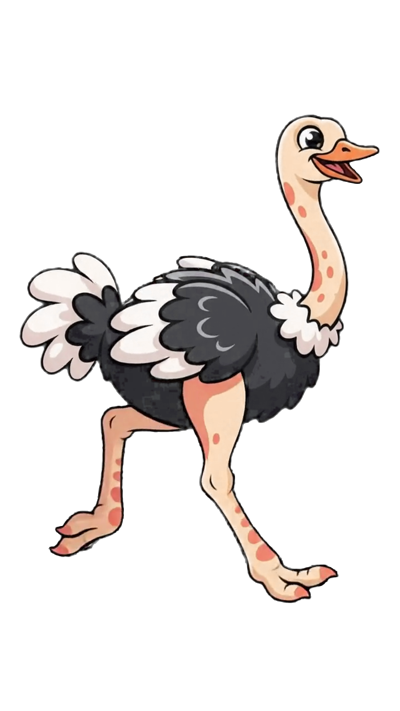

🏃 달리기 게임
발구름 카운터
카메라 앞에서 제자리 달리기 — 발이 땅에 닿을 때마다 숫자가 입력됩니다 (1인 = 1 · 2인 = 왼쪽 1, 오른쪽 2)
PLAYER 1

0
대기
▶
시작
(스페이스바)을 누르면 카메라가 켜집니다
웹캠이 없으면
데모 모드
로 동작을 확인할 수 있어요
대기 중
👥 인식
0
명
FPS
–
🎚️ 민감도
−
100
%
+
📷 카메라
−
0
%
+
입력 스트림 · 왼발·오른발 번갈아 착지 = 1스텝
발이 땅에 닿으면 숫자가 찍힙니다
▶ 시작
■ 정지
🤖 데모 모드
↺ 다시 시작
거울
영상
사운드
PLAYER 2
0
대기
비밀번호 4자리
1
2
3
4
5
6
7
8
9
⌫
0